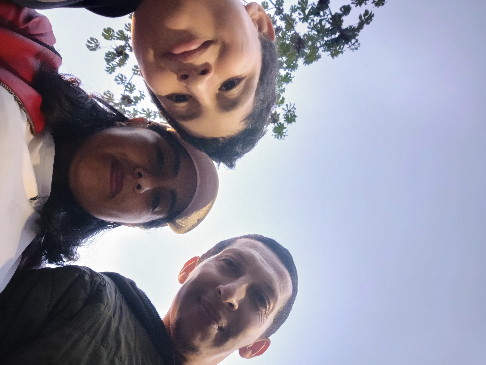
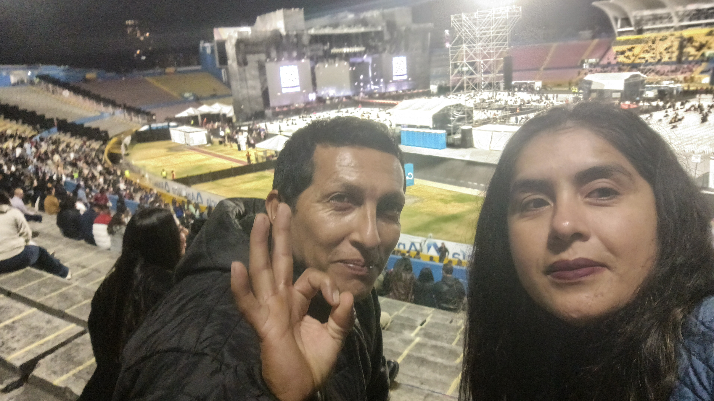
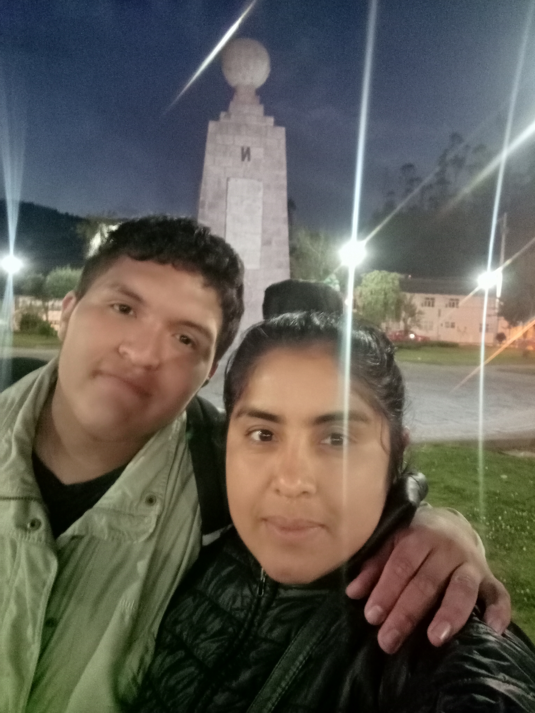

¡Feliz Cumpleaños! 🎉
Celebrando tu vida, tus risas contagiosas y cada momento inolvidable compartido juntos.
Abre con cariño cada recuerdo que preparamos para ti
Nuestros Recuerdos

Aquel viaje inolvidable
El mundo se ve más brillante cuando sonríes a carcajadas.

Nuestras tardes de risas
Donde los minutos vuelan y la felicidad siempre abunda.

Haciendo tus sueños realidad
Que este nuevo año cumpla todo lo que anhela tu gran corazón.

Por los momentos que tuvimos.
Gracias por estar conmigo cuando mas te necesitaba :3
Carta Dedicatoria
Querida persona extraordinaria,
Hoy es un día especial, porque celebramos la vida de una de las personas más importantes de la mía: tú, mamá.
A veces, las palabras no son suficientes para expresar todo lo que alguien significa para nosotros, y quizá no siempre encuentre la manera perfecta de decirte cuánto te quiero y lo importante que eres en mi vida. Pero hoy quiero recordarte que, entre tantas personas y caminos que existen en este mundo, tú ocupas un lugar que nadie más podría llenar.
Gracias por ser parte de mi historia, por acompañarme en mi crecimiento y por representar ese lugar de confianza al que siempre puedo volver. A medida que voy creciendo, descubro que la vida trae nuevos retos, preocupaciones y sueños por cumplir, y en medio de todo eso, tenerte en mi vida es algo que valoro profundamente.
En este nuevo año de vida, deseo que nunca te falten la salud, la tranquilidad, las razones para sonreír ni las personas que te hagan sentir tan querida como mereces. Que la vida también te regale momentos bonitos, que puedas cumplir tus sueños y que encuentres felicidad en cada una de esas pequeñas cosas que hacen que valga la pena vivir.
"No importa cuánto crezcamos ni cuántos caminos recorramos; hay personas cuyo lugar en nuestro corazón permanece intacto, porque forman parte de lo que somos y de todo aquello en lo que algún día llegaremos a convertirnos"
Feliz cumpleaños, mamá.❤ Gracias por ser una parte tan importante de mi vida. Espero que este nuevo capítulo te traiga muchas bendiciones, días felices y motivos para sentirte orgullosa de la persona que eres.
Con todo mi cariño y admiración sincera,
Siempre a tu lado tu hijo el ing ❤️
¡Haz un Deseo de Cumpleaños!
Toca el botón mágico para celebrar con una lluvia festiva de confeti.